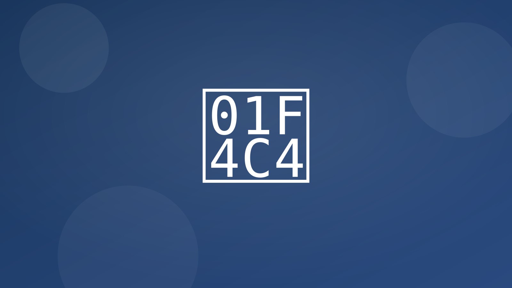

Del presupuesto a la factura y cobro con conciliación automatizada.
- Presupuesto → Factura → Cobro Convierte presupuestos aceptados, adjunta link de pago (tarjeta/SEPA/Bizum), concilia al recibir el pago y notifica al cliente.
- Secuencia de reclamación de impagos (AR dunning) Recordatorios amables en D+3/D+7/D+14; pausa si detecta pago; escala VIPs a persona y agenda llamada.
- Ayudante de conciliación bancaria Exporta CSV del banco; cruza con facturas; marca discrepancias para revisión y genera asiento sugerido.
- OCR de gastos Lee tickets (foto/email), categoriza, envía a contabilidad; extracción de IVA y pack mensual para gestoría con justificantes.


Integraciones típicas
- Stripe/SEPA/Bizum, Facturación (Holded, Odoo)
- Bancos con exportación CSV/Norma 43
- Google Drive/Email para tickets y documentos
KPIs esperados
- −5–12 días en DSO (tiempo de cobro)
- −50–80% tiempo manual en conciliación
- Mayor control de gastos con justificantes ordenados